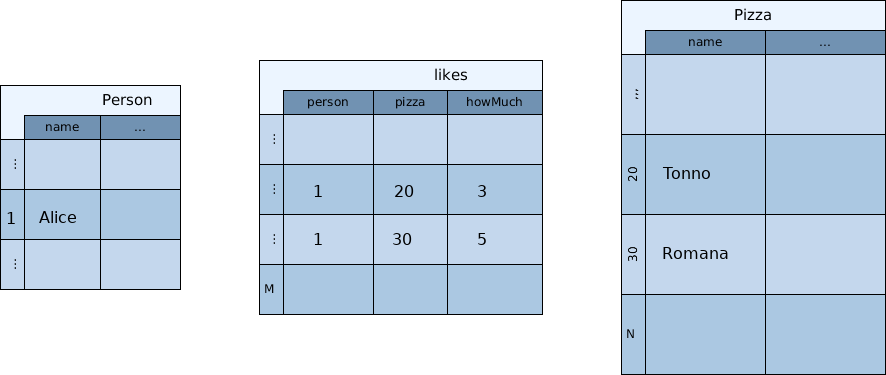
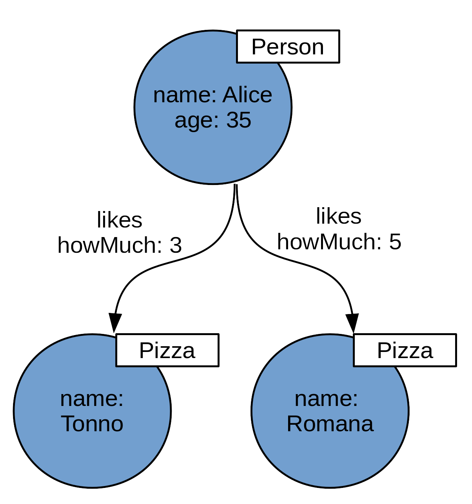
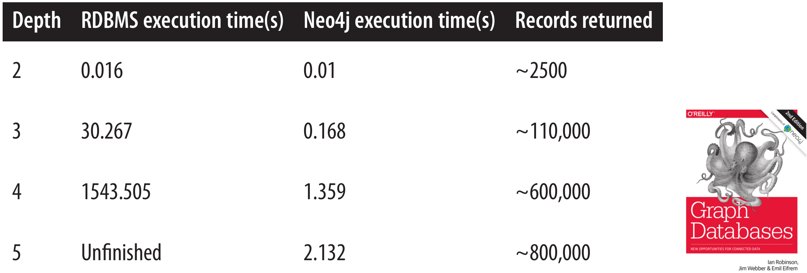

Type safety in the world of graph databases
Michael Pollmeier- graphs: what and why
- query languages
- type safety with gremlin-scala
Relational db anyone?
relations in sql
SELECT pizza.name
FROM Person as person
JOIN Likes as likes ON person.id = likes.person
JOIN Pizza as pizza ON likes.pizza = pizza.id AND
WHERE person.id = 1
g.V(1).out("likes").values("name")
Property Graph
(friends of friends)^n
Query languages
Cypher
MATCH (Actor {name: 'Woody Allen'})
-[:ACTED_IN]->(movie:Movie)
WHERE movie.year > 2010
RETURN movie
SPARQL (W3C)
PREFIX info: <http://somewhere/peopleInfo#>
PREFIX vcard: <http://www.w3.org/2001/vcard-rdf/3.0#>
SELECT ?name ?age
WHERE
{
?person vcard:FN ?name .
OPTIONAL { ?person info:age ?age . }
FILTER ( !bound(?age) || ?age > 24 )
}
Gremlin (Apache TinkerPop)
g.V().has("name","gremlin")
.out("friend")
.out("friend")
.values("name")

https://github.com/mpollmeier/gremlin-scala
setup
import gremlin.scala._
implicit val graph = TinkerGraph.open.asScala
schema
define once, use everywhere
object PersonNode {
val name = Key[String]("name")
val age = Key[Int]("age")
}
object LikesEdge {
val howMuch = Key[Double]("howMuch")
}
arrow syntax
val alice = graph + ("person", name -> "alice", age -> 35)
val tonno = graph + ("pizza", name -> "tonno")
alice --- "likes" --> tonno
alice --- ("likes", howMuch -> 3) --> tonno
case classes
@label("person")
case class Person(@id id: Option[Int] = None,
name: String,
age: Option[Int])
val alice = graph + Person(name = "alice", age = Some(35))
alice.toCC[Person] // Person with id set
traversal basics
val g = graph.traversal
g.V // GremlinScala[Vertex]
g.V.toList // List[Vertex]
g.V(1) // GremlinScala[Vertex]
g.V(1).headOption // Option[Vertex]
out step
g.V(1).out("likes") // GremlinScala[Vertex]
g.V(1).outE("likes").inV // GremlinScala[Vertex]
has step
g.V.hasLabel("person") // GremlinScala[Vertex]g.V.has(name) // GremlinScala[String]g.V.has(age, P.between(25, 35)) // GremlinScala[Int]group
g.V.group(By.label)
// GremlinScala[Map[String, Collection[Vertex]]]
g.V.group(By(__.outE.count))
// GremlinScala[Map[Long, Collection[Vertex]]]
g.V.has(age).groupCount(By(age))
// GremlinScala[Map[Int, Long]]
repeat
g.V(1)
.repeat(_.out)
.until(_.outE.count.is(P.eq(0)))
as/select
g.V.as("a")
.outE.as("b")
.value(howMuch).as("c")
.select
// GremlinScala[(Vertex, Edge, Double)]
catch errors at compile time
g.V.outE.outE
g.V(1).property(name, 5) //name: Key[String]
g.V.value(name).mean
Downsides: Tinkerpop
- db maturity
- db driver
- tooling
https://github.com/mpollmeier/gremlin-scala-examples
 http://tinkerpop.apache.org
http://tinkerpop.apache.org
ShiftLeft Tinkergraph
- 70% less memory
- strict schema validation
https://github.com/ShiftLeftSecurity/tinkergraph-gremlin
Summary
- graphs
- gremlin-scala: typesafe dsl
- nice DSL to create vertices and edges
thank you!
https://github.com/mpollmeier/gremlin-scala-examples
http://tinkerpop.apache.org https://github.com/ShiftLeftSecurity/tinkergraph-gremlin
https://www.michaelpollmeier.com